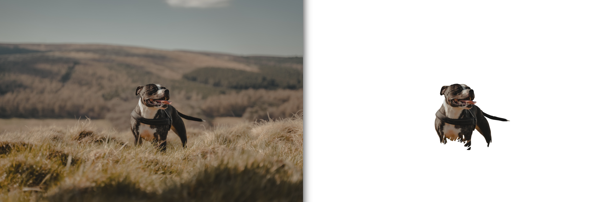

Sabri 'Elras' Bolkar
Github | LinkedinWork: sabri.bolkar (at) bright-river.com
Personal: sabribolkar (at) gmail.com
I am a machine learning applied scientist and engineer. I studied computer vision at NTNU and completed my MSc thesis on unsupervised image segmentation at KU Leuven. Then I had a PhD adventure at TU Delft where I worked on fast registration algorithms for incomplete 3d point cloud data. Currently, I develop CV/ML algorithms and create the MLOps infrastructure at Bright River where I aim to disrupt image and 3d editing industry using automated smart solutions.
Please get in touch! I am open to collaborations for new research ideas and open-source projects.
I also played pro-basketball for some time, reach out if you are looking for a player in your local team!
Updates
Projects | Publications
|  |
|
||
|
|||
 |
|
||
|
|||
|